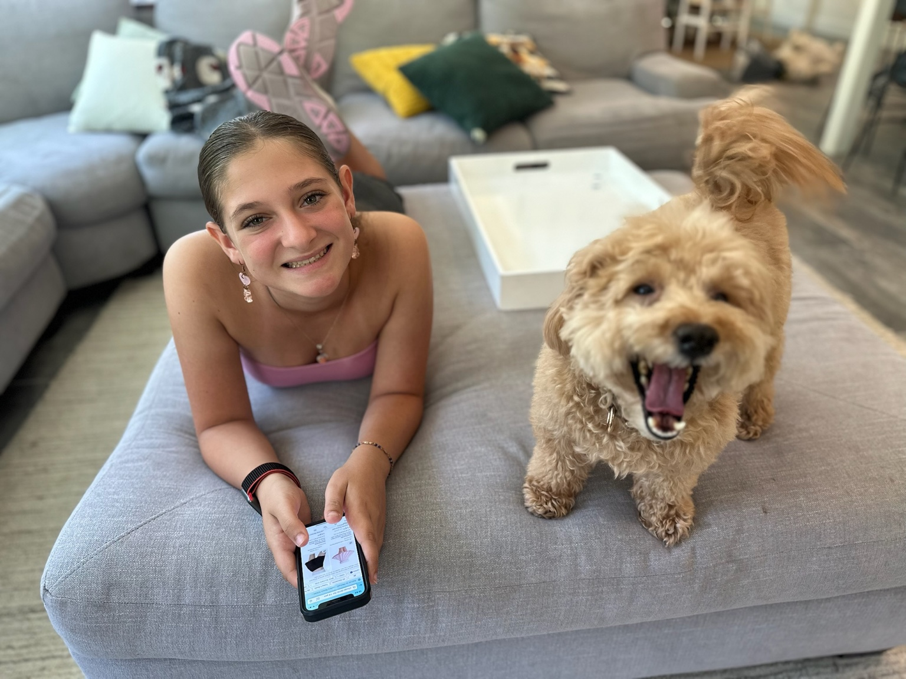
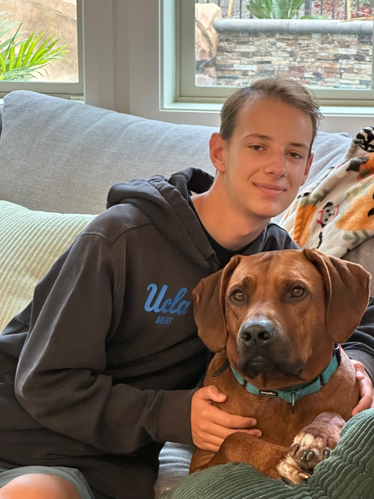
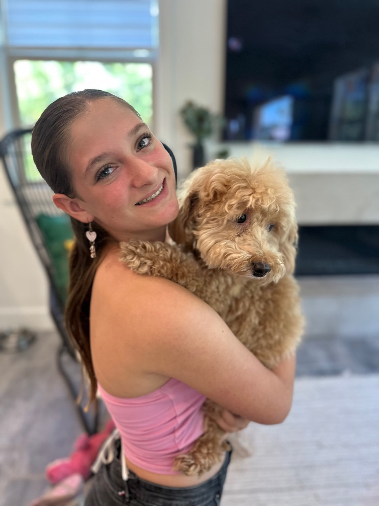
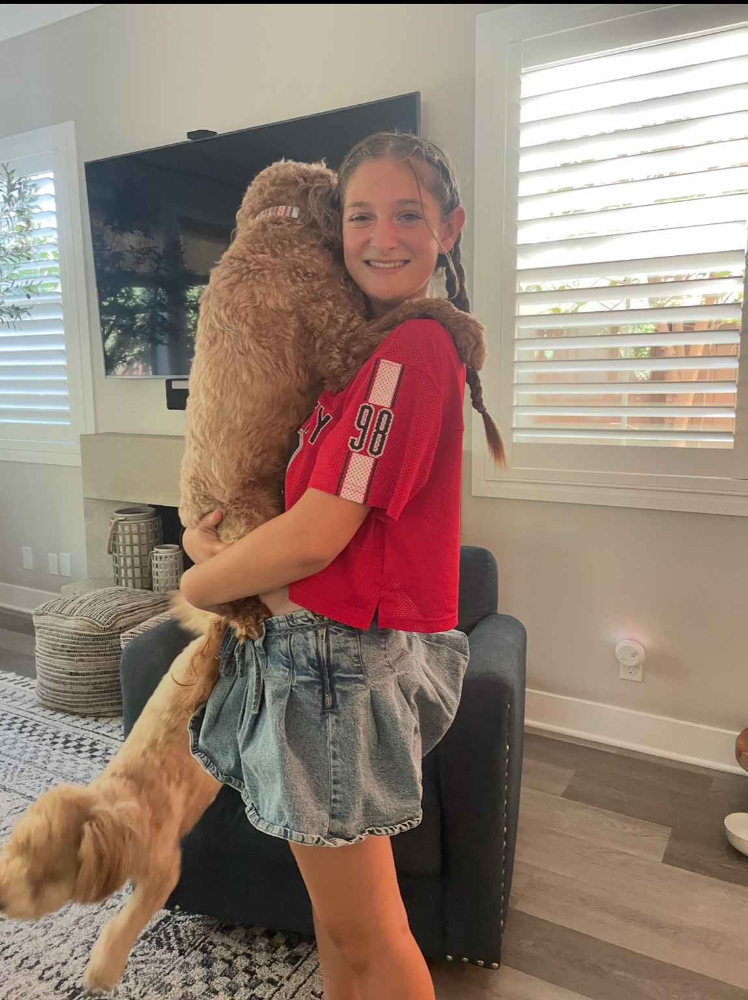
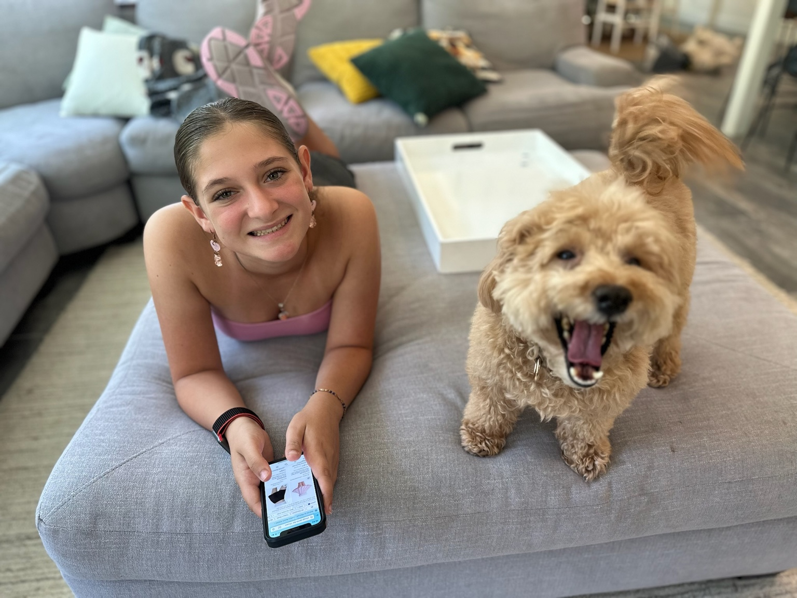
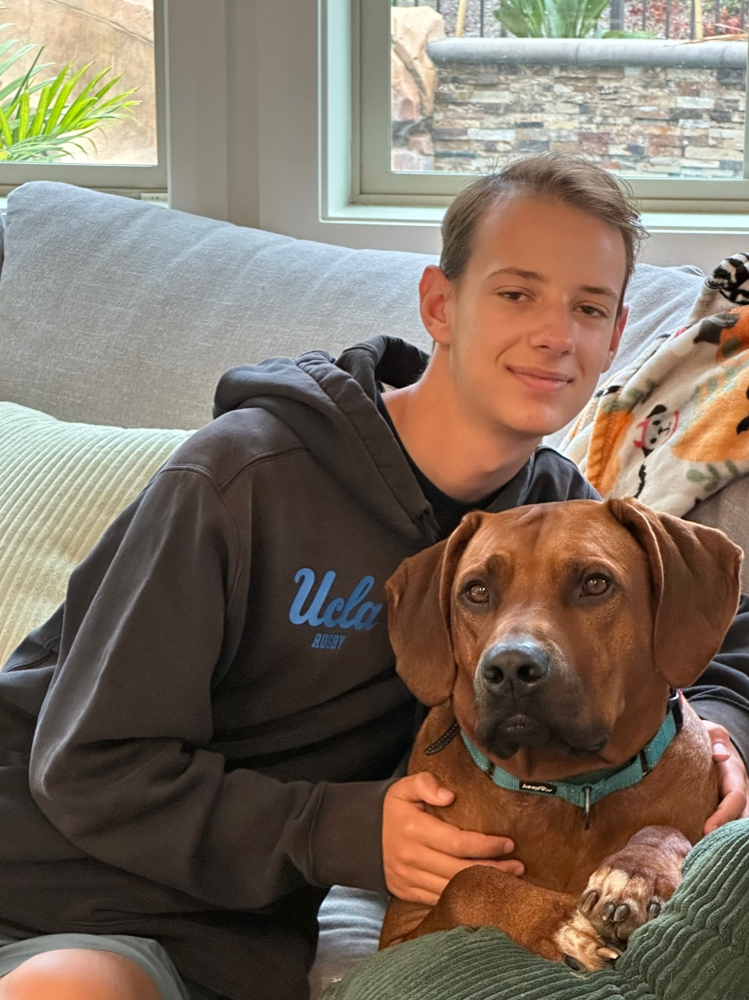
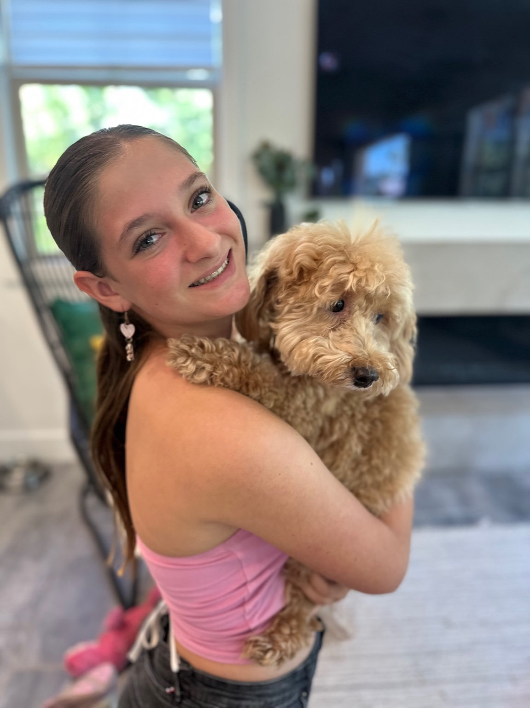
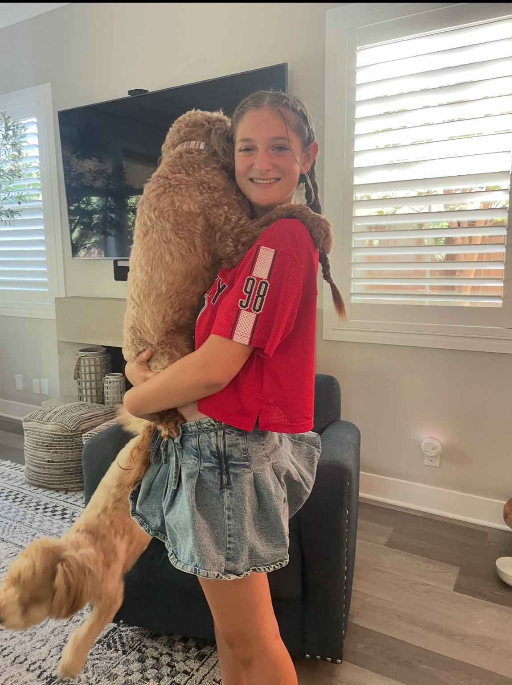

In-Home Dog Boarding
$75/day
(small/medium dogs)
Your dog stays in our family home – not a kennel. They’ll hang out on the couch, play in the yard, and sleep inside with us. Perfect for social, family-loving pups who want company all day and night.
- Safe, supervised family environment
- Plenty of cuddles and playtime
- Photos and updates while you’re away
- Requirement: Your dog must be friendly and able to get along with our very friendly Golden Retriever, PJ.

 






